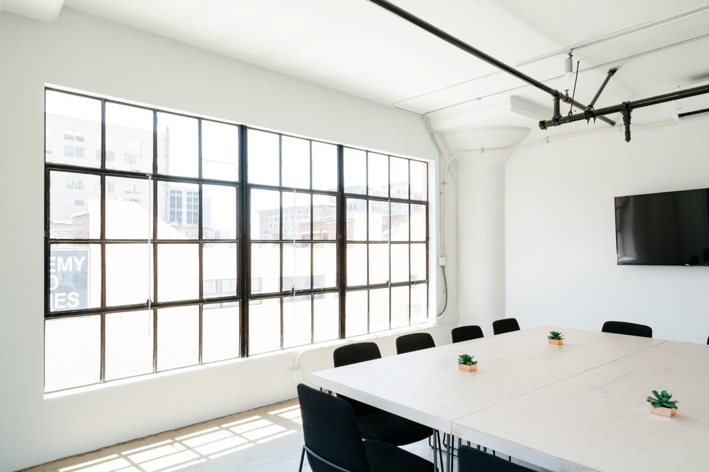
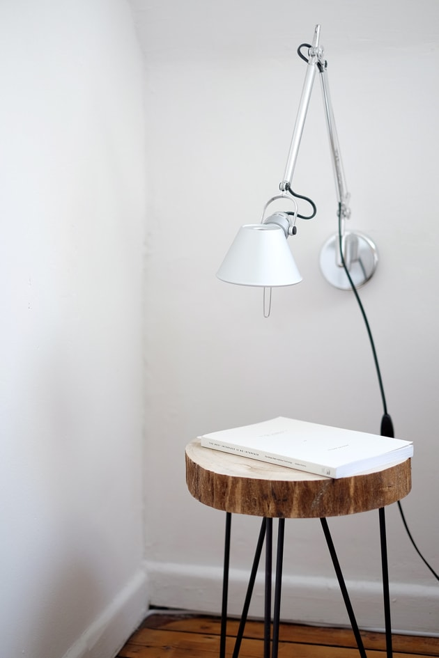
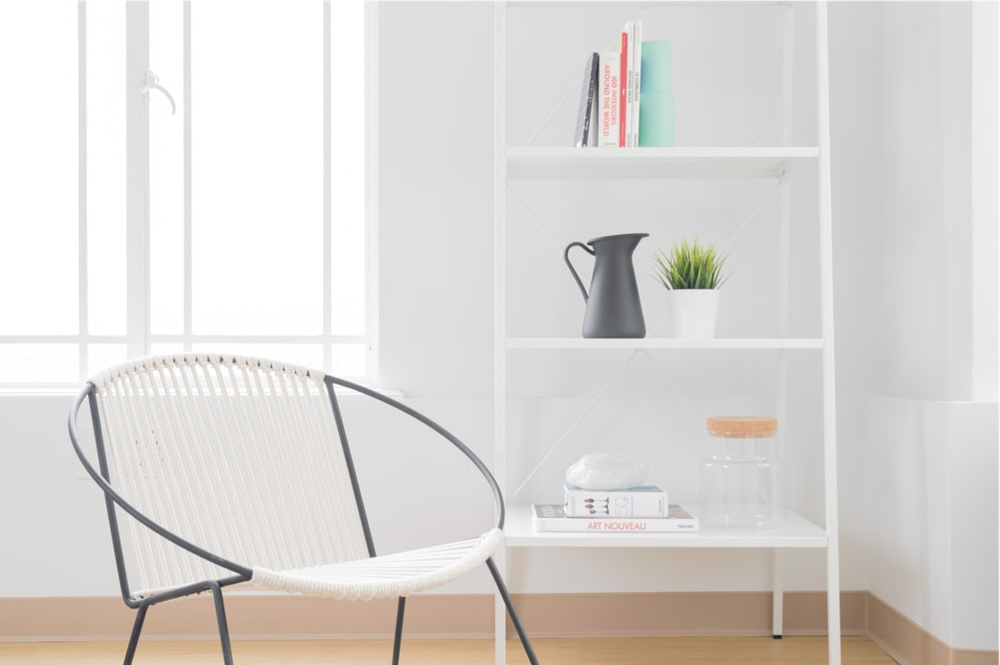

An industrial design office based in Oslo. We design objects, surfaces, products, furniture and spaces.


Industrial Night Stand and Lamp ↗
We work with a wide range of corporate and cultural clients, both locally and internationally.

Day Chair ↗
Our Process
We design furniture, lighting, accessories and components, working together with a range of suppliers and manufacturers. In particular, We have built a close relationship with a local foundry for cast elements in bronze and aluminium.